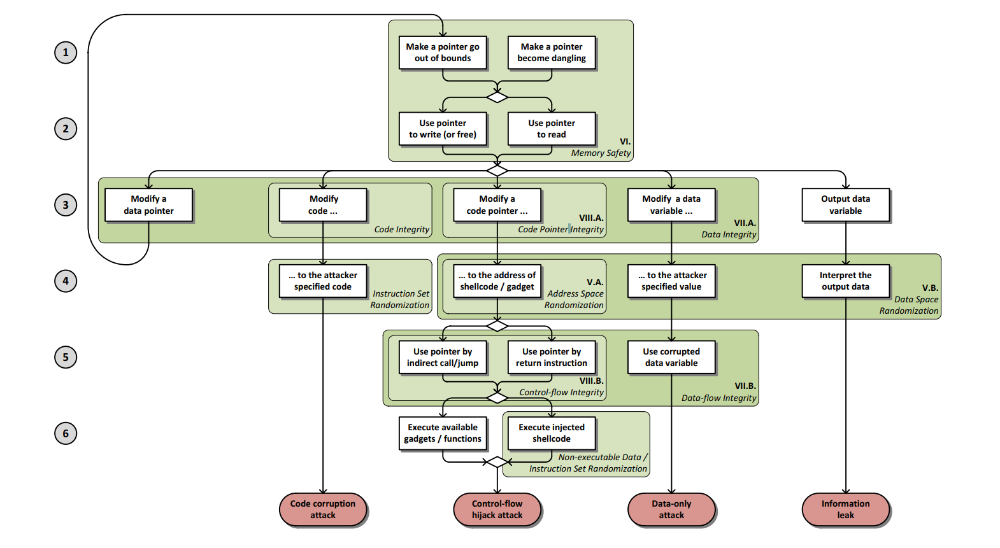

Abstraction
Goal and Contribution:
- 建立memory corruption attack的通用模型。
- 分析防护措施的高效性以及实用性。
- 为open research problem提供建议。
Introduction
先是开了个玩笑，”The most obvious solution would be to avoid these languages and to rewrite volunerable applications in type-safe languages.” 然后说, 因为C/C++的代码的数量和效率，这不可能。
Memory war(内存战争) is an arms race between offense and defense.
同时，通过Chrome被exploited four times表达Memory corruption的危害和广泛性。
之后，就是陈述这个topic目前的情况了。
防守端：
Stack cookies, exception handler validation, data execution prevention and Address Space Layout Randomization
进攻端：（在以上措施全部应用的情况下）
Return Oriented Programming(ROP), information leaks, user script and just-in-time compilation都是可以用来攻击的点。
相应的，很多机制都被提出以应对以上的attack，但是都没有被实际应用，原因：
- performance overhead
- not compatible with all currently used features
- not robust
- protection is not complete
- depends on change in some toolchain
终于到了motivation:
systematize and evaluate previously proposed approach. 系统化的管理和评估之前提出的攻击防御手段。
- systematize exploitation: 建立一个general model for memory corruption vulnerabilities and exploitation techniques.
- systematize protection: 根据防御的问题和阶段进行分类。
- evaluation：based on robustness， performance and compatibility。（deployment）
按照惯例，把前人批判一番。但是本篇论文没有这么做，只是说自己比前人更加系统化，在evaluation模块使用了不同的标准以及引人了实际的deployment的问题。
Contribution:
- develop a general model of memory corruption attacks and identify different enforceable security polices based on model.
- clarify what attack vectors are left unprotected by currently used and previously proposed protections by matching their enforced polices with separate phases of different exploits.
- evaluate and compare proposed solutions for performance, compatibility and robustness.
- discuss why many proposed solutions are not adopted in practice and what the necessary criteria for a new solution are.
Attacks
这个section主要讨论了基于攻击方式分类以及相应的措施和问题。
Memory corruption
总结了memory corruption攻击的方式。具体包括两个step: 1. makes a pointer invalid. 2. dereferences the pointer.
对于step 1，有两种方式，分别是dangling pointer（使用free后的pointer，对应temporal error）和out of bound（使用指针指向数组之外。对应spatial error）。（其实还包括failure allocation，也就是null pointer）。
对于step 2，上面的两种指针都可能被利用。可以分为read和write。
read：攻击者可以使得指针指向被他控制的内存，当读取相应的指针时，就会产生corruption或者泄露信息。
write：攻击者有可能去overwrite执行数据或者代码（return address，virtual table pointer）。都会对应相应的corruption。
Code corruption attack
防止code section被overwrite的保护措施：Code Integrity enforces the program code can not be written.
但是这些措施还是有问题。比如self modifying code和Just-In-Time Compilation. (只有在time window内的部分会被保护）。
Control flow hijack attack
step 3，使用memory error来控制code pointer。通过控制code pointer来进行corruption。相应的防护措施是Code Pointer Integrity。
step 4，解读/修改具体指向内存。由于attack需要知道具体的内存意义，所以可以用Address Space Randomization来防止。
step 5，execution needs to load corrupted pointer into instruction pointer。即需要将corrupted pointer加载入instruction pointer。即需要将corrupte。可以通过control-flow integrity来防止。
step 6，执行劫持的代码。可以使用Non-executable data policy来防止（stack/heap non-execuatble）。Non-execuatble data 和code integrity可以联合称号W^X policy，也就是让内存page执行和写入二选一。
W^X cost很低，是一种pratical的方法。但是在两种情况下还是不能完全防止。
- 由于JIT compilation或者self-modifying code的存在，使得W^X不能完全保证（fully enforce）。
- 攻击者可以reused code（return to libc attack or gadgets）。对于Return Oriented programming（ROP）以及其泛化版本jump oriented programming（JOP）。
Data-only attack
通过修改敏感数据来劫持代码，以达到控制代码执行方式。对应的防护是Data Integrity和data space randomization。
注意：data integrity包括code integrity和code pointer integrity。
Information leak
任意的exploit都可被利用来得到信息。相应的防护措施也在memory safety里面提及了。唯一需要特别提及的，是full data space randomization。
Currently used protections and real world exploits
Stack smashing protection
检测stack overflow导致的overwrite return address。
在return address后放一个随机数字（cookie or canary）。每次执行后return的时候都检查cookie是否改变。
SafeSEH和SEHOP用了同样的思想，在所有handler pointer使用前都要检查cookies。属于一种control flow integrity。
问题：
- 只检查某些特定的code pointer。
- 检查机制可以被跳过。
DEP/W^X
控制某些memory只能写或者只能执行。
问题：
- 不能阻止reused attack（ROP）
ASLR是一种广泛使用Address Space Randomization机制。把各种memory segments都随机摆放。
问题：
- 实现的很弱（weakness）
- information leakage
由于web browser，PDF viewers和office application都可以运行script，所以用户可以在本地测试memory layout和cookies。
Approaches and evvaluation criteria
protection techniques被分为两种类型：probabilistic和deterministic。
protection
effectiveness和accuracy。由Falsed negative 和falsed positive描述。
cost
performance overhead：实验证明大于10%的overhead不会被采用。工业上认为5%以内才会被采用。
memory overhead：比runtime performance影响小很多。
Compatibility
source compatibility：不用手动更改代码。工业界认为需要porting or annotating the source code impractical。
binary compatibility：不用修改binary modules。可能仍旧与一些没有修改的libraries相连。
modularity support：独立模块被独立处理。（需要支持所有的indispensable module）。
probabilistic methods
3种主要approaches：instruction sed randomization，address space randomization和data space randomization。
由于hardware improvements，ISR已经obsolete（过时）。
ASR：随机code和data。DSR：随机所有内存。
Address space randomization（ASP）
Address space layout randomization（ASLR）是最常用的ASP技术。重新安排code，data内存区域的位置。
问题：
- 如果不是所有code和data section都被随机安排，保护总是可以被跳过的。
- linux中main module总是固定的address。
- 由于编译成position independent executables会额外增加10%的效率下降，大部分程序都不选择如此。
- 对于32-bit机器，可以使用brute-force or de-randomization攻击。
- 使用partial pointer overwrite，可以使得指针指向就近的地址。
- 对于高熵值（x64），仍旧可以用information leak得到有用信息从而掠过protection。
W^X：规定内存块只可以执行或者只可以写入。
问题：
- code reuse。
Self-Transforming instruction reolocation(STIR)
在launch时，随机re-order binary的基本模块。可以使得ROP攻击更加难。
问题：
- 不能保护return-to-libc攻击。
- 假设了ROP需要多个gadgets，但是有些attack只需要一个gadgets。
Pointer encryption（PointGuard）
对所有pointer加密，在加载入register前解密。使用XOR对所有pointer和固定的key。
问题：
- attacker可以轻易的得到key。
- 既不是binary也不是source code compatible。
Data Space Randomization
对所有variables加密。（PointGuard只对location/pointer加密）。
问题：
- 平均overhead为15%。
- not binary compatible。
- 当需要point-to analysis时，modularity将会成为一个问题。因为解密需要全局进行，所以无发对单个模块独立执行。
Memory safety
强迫memory safety会使得所有内存corruption都不可行。我们想要通过嵌入的low level reference monitors来使得不安全的代码有类似的安全性。
相应的措施可以在source code，intermediate representation以及binary level。
spatial safety with pointer bounds
只有跟踪pointer bounds才能完全保证空间safety。
CCured 和Cyclone使用”fate pointers“来增加额外信息。
问题：
- source compatibility
- binary compatibility
SoftBound通过区分metadata解决了compatibility的问题。有一个hash table去把pointer和相应的metadata连接起来。
问题：
- 67% overhead
- 对于unprotected libraries来说，只提供了limited compatibility。如果被unprotected module修改了某些pointer，相应的metadata不会被修改。
spatial safety with object bounds
为了解决上文compatibility的问题，提出了与object相关联的metadata。在pointer计算时就阻止其指向object之外（而不是dereference时候）。
问题：
- pointer可能指向外部，只要没有dereference。(J&K)GCC patch第一个使用这种方法，通过前方多一个byte作为padding，当访问超过这一个byte时，产生alarm（maybe false alarm）。
- 仍旧可能有false negative。指向object内部的指针不会被检查。由于C允许pointer计算符合struct的规则，pointer需要根据struct的大小进行迭代。
- 尽管有很多改进方法，overhead仍旧超过60%（baggy bounds checking）。
Temporal Safety
主要是Use-after-free和double-free。
Special allocators
Cling作为malloc的代替，保证某一地址的重新使用只能是同种object和同种alignment。
问题：
- 没有防止dereference dangling pointers。
- 不能防止unsafe reuse of local，stack allocated object。
Object based approaches
让deallocated memory放在shadow memory space。可以防止use after free。
问题：
- reallocated for another pointer会导致shadow memory可以被访问。因此之前的dangling pointer仍旧可以访问。
- 唯一防止use after free的方式是对pointer增加metadata而不是对object。
- overhead 73%。
pointer based approaches
当free一个pointer时，所有pointer pointing to it应该被记录在metadata中，所以不能用一个bit来记录。
CETS被证实保证了temporal safety（在spatial safety被保证的前提下）。
问题：
- 48% overhead。
- 当使用softbound来保证spatial和temporal，需要116%的overhead。
Generic attack defenses
data integrity 和data flow integrity都是相对比较弱的措施。
data integrity
aproximation of spatial memory integrity。only protect against invalid memory write， not read。
integrity of safe objects
先确定一个unsafe pointer的集合，然后对所有unsafe pointer指向的内存区域做标记。每个byte都被标记在shadow memory（在creation和deallocation时都标记）。写入时，先检查shadow memory。
问题：
- in case of memory，the corruption can still happen。
- cannot protect from reading corrupted.
- false alarm if created by unprotected module and then used by transformed module。
integrity of points-to sets
Write integrity testing（WIT）作为integrity of safe objects的进阶版本，对所有pointer作标记，其指向的内存都做了唯一标记（不同于前者），相应的pointer写入只能写入自己范围。
同时，indirect call也被检查（根据唯一标识id来寻找memory）。
问题：
- not read checking。
- temporal corruption return address is still possible。
- performance overhead can be up to 180%。
Data flow integrity
check read instruction before data be used。即，强迫data最后被写入遵从代码control flow graph。
every written memory location is marked in the shadow memory with writing instruction’s ID。
问题：
- overhead 50-100%。
- not binary compatible。
- 仅仅检测read instrumentation。
Control flow hijack defenses
code pointer integrity: prevention the corruption of code pointers
control flow integrity: detect the corruption
code pointer integrity
这一步的检测很困难。
一方面，一些code pointer可以被设置为只读，例如vtable和global offset table。但是另一些code pointer如user defined function pointer不可能被设置为只读。
另一方面，即使保证了这些内存的正确性（integrity），注入仍旧是可能的。如使用一个dangling pointer时，可能会用到错误的virtual function table。
control flow integrity
这方面的防护主要是针对indirect control transfers。
dynamic return integrity
最著名的攻击是stack smashing。
防护一，stack cookie or canary。这种防护可以在return和local buffer之间放一个cookie/canary，在执行return前查看是否被overflow。
问题：
- donot protect indirect calls and jumps
- information leak
优点： - 效率高。overhead只有1%。
- compatibility完美。
防护二，shadow stacks。解决了cookie的两个问题。在return被放在stack时，return address也会被放在一个独立的shadow stack，在返回时会被拿来比较。
同时，为了保护shadow stack，RAD用了guard pages或者switching write permission。但是都引入了不小的cost。
stack control flow graph integrity
对于indirect calls和jumps
Discussion
Conclusion
根据时间顺序总结了目前的攻守战役。
- 为了解决ROP攻击，researcher发明了ASLR，使得code，data顺序随机排列。
- 由于JIT compilation以及其他offline script的软件的流行，attacker可以猜到地址排列破解了randomization。
作者提出，相比于针对某一种攻击，researcher应该更加注重攻击方向（big picture）。这正是本篇paper的作用。
同时，researcher在研究时，也要注意solution的效率。本文提出了几个评价标准，包括overhead，compatibility。